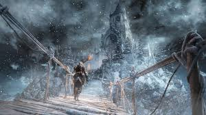

Hello ashen ones, today I will show you my page!
Plot
Set in the Kingdom of Lothric, the player is tasked to survive an oncoming apocalypse brought about by the ongoing conflict between the age of fire and those branded with the Dark Sign as with previous iterations of the series. To survive this event the player character must face the Lords of Cinder, previous heroes who linked the fire, as the cycle of Light and Dark continues and no matter what you do, darkness will return and repeat itself forever.
Gameplay
Similar to Dark souls II, fast travel is available from the beginning of the game provided the player character places the Coiled Sword at Firelink Shrine.Players are able to reallocate stat points as well as reconfigure character creation at the Rosaria's Bedchamber bonfire in the Cathedral of the Deep up to five times per play through.New Game Plus makes a return. After the player has finished the game, the player has a choice to begin a new game immediately or at a later time via the bonfire in Firelink Shrine. New Game Plus is optional. Players will retain all equipment, upgraded character attributes, and consumables with the exception to keys. The game's difficulty is increased each subsequent play though up to new game plus seven.Weapon Degradation is almost non-existent.The Summoning and Cooperative Playsystem from the first two games remains for the third installment.In addition, the game offers a Co-op code system where you can input a code under the network tab in the options menu. This Code bypasses all cooperative gameplay mechanics to play with friends. During this session, weapons from more powerful players are scaled down to match the lower level cooperators weapon enhancement. This is intended to balance cooperative play. Illusory walls also remain. A Focus Points system (or FP), similar to the one found in Demon's souls, has been added which governs skills and Spell Casting. The FP bar can be refilled by resting at a bonfire or by drinking from the Ashen Estus Flask. An Ember system, similar to the humanity mechanic from the first game, replaces the Human Effigy. The player becomes kindled by consuming an Ember. This increases the player character's health by 30% and allows them to summon other players to their world. This is similar to the Soul/Body Form system of Demon's Souls.Players may be invaded while "Enkindled" if the area boss has not been defeated. However, certain hostile summon signs may be present while enkindled in worlds where the area boss has been defeated. It is also possible to be invaded by the Watchdogs of Farron on the Road of Sacrifices while un-kindled.

Trailers
Photo gallery
